अध्याय 5: समकालीन विश्व में सुरक्षा (Security in the Contemporary World) - भाग 1
विश्व राजनीति के अध्ययन में 'सुरक्षा' (Security) अथवा 'राष्ट्रीय सुरक्षा' (National Security) जैसे शब्दों का सामना हमें बार-बार करना पड़ता है। अक्सर सुरक्षा का मामला इतना महत्वपूर्ण और गुप्त माना जाता है कि इसे लोकतांत्रिक चर्चा से दूर रखने का प्रयास किया जाता है। परंतु लोकतंत्र में सुरक्षा जैसे बुनियादी विषय पर खुली चर्चा होनी आवश्यक है।

कार्टून का विवरण: कार्टूनिस्ट द्वारा बनाया गया यह कार्टून युद्ध (Ares - युद्ध का यूनानी देवता) और असुरक्षा को दर्शाता है।
कार्टून का संदेश: "युद्ध का मतलब है असुरक्षा, विध्वंस और मृत्यु! युद्ध किसी को क्या सुरक्षा दे पायेगा?" यह कार्टून यह सवाल उठाता है कि क्या वास्तव में सैन्य युद्धों द्वारा कभी स्थाई सुरक्षा प्राप्त की जा सकती है।
1. सुरक्षा क्या है? (What is Security?)
सुरक्षा का बुनियादी अर्थ है—खतरे से आजादी (Freedom from Threats)। हालांकि, मानव जीवन का अस्तित्व ही खतरों से भरा है। ऐसे में हर खतरे को सुरक्षा का विषय नहीं बनाया जा सकता। केवल उन्हीं खतरों को 'सुरक्षा' से जोड़ा जाना चाहिए जिनसे जीवन के 'केंद्रीय मूल्यों' (Central Values) को अपूरणीय क्षति पहुँचने का खतरा हो।
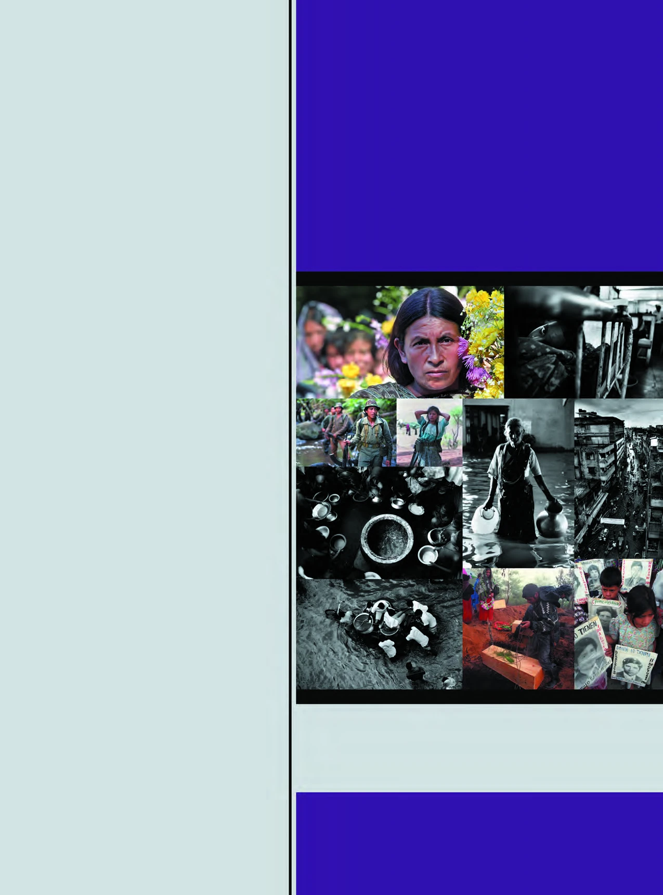
ये चित्र सुरक्षा के दो बहुत अलग आयामों को दिखाते हैं:
1. ग्वाटेमाला (Guatemala) में लंबे समय तक चले गृहयुद्ध के भयानक दृश्य, जहाँ माताएं युद्ध में गुम हुए अपने बच्चों की तस्वीरों के साथ इंतजार कर रही हैं और शहीदों को याद किया जा रहा है। (सैन्य और गृहयुद्ध सुरक्षा का पहलू)
2. बांग्लादेश (Bangladesh) में बाढ़ जैसी भीषण प्राकृतिक आपदाओं से उपजी असुरक्षा और पलायन। (गैर-पारंपरिक/पर्यावरणीय सुरक्षा का पहलू)
2. सुरक्षा की दो श्रेणियां (Two Categories of Security)
विभिन्न समाजों में समय के साथ सुरक्षा के खतरे बदलते रहे हैं। इसलिए सुरक्षा की धारणा को दो मुख्य श्रेणियों में समझा जाता है:
- पारंपरिक धारणा (Traditional Notion): इसमें मुख्य रूप से बाहरी सैन्य हमलों, सीमाओं की रक्षा and युद्ध जैसे खतरों को शामिल किया जाता है।
- अपारंपरिक धारणा (Non-Traditional Notion): इसमें मानवाधिकारों की रक्षा, गरीबी, महामारी, आतंकवाद and ग्लोबल वॉर्मिंग जैसे वैश्विक मानवीय संकटों को शामिल किया जाता है।

अध्याय 5: समकालीन विश्व में सुरक्षा - भाग 2 (पारंपरिक सुरक्षा: बाहरी खतरे)
सुरक्षा की पारंपरिक अवधारणा में सबसे मुख्य ध्यान बाहरी सैन्य खतरों (External Military Threats) पर होता है। इसमें माना जाता है कि किसी भी देश के लिए सबसे बड़ा खतरा पड़ोसी या किसी अन्य देश की सैन्य शक्ति से होता है।
1. युद्ध की स्थिति में सरकार के पास तीन विकल्प
जब किसी देश पर सैन्य हमला होता है या युद्ध की स्थिति उत्पन्न होती है, तो उस देश की सरकार के पास मुख्यतः तीन विकल्प होते हैं:
- आत्मसमर्पण (Surrender): युद्ध किए बिना ही शत्रु देश के सामने घुटने टेक देना और उसकी शर्तों को स्वीकार कर लेना। हालांकि, कोई भी संप्रभु सरकार इसे अपनी आधिकारिक नीति के रूप में कभी घोषित नहीं करती।
- अपरोध (Deterrence): शत्रु देश को युद्ध शुरू करने से पहले ही इस बात के स्पष्ट संकेत दे देना कि युद्ध से होने वाला नुकसान उसके लाभ से कहीं अधिक होगा, जिससे वह डरकर हमला न करे। (युद्ध की आशंका को रोकना)
- रक्षा (Defense): यदि युद्ध शुरू हो ही जाए, तो अपनी रक्षा करना, हमलावर देश को अपने मंसूबों में कामयाब न होने देना, उसे पीछे हटने पर मजबूर करना या उसे पराजित कर देना।
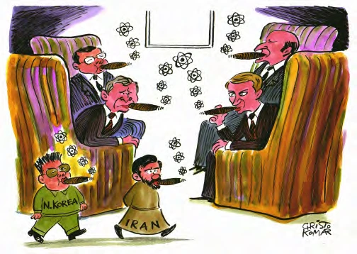
कार्टून का विवरण: कार्टून में दिखाया गया है कि जब कोई नया विकासशील देश परमाणु शक्ति संपन्न होने का दावा करता है, तो पहले से परमाणु संपन्न बड़ी ताकतें (जैसे अमेरिका) चिंतित हो जाती हैं और उस पर प्रतिबंध लगाती हैं।
कार्टून का संदेश: यह कार्टून बड़ी परमाणु शक्तियों के दोहरे मापदंड (Double Standards) पर व्यंग्य करता है—वे खुद तो विशाल परमाणु हथियारों के जखीरे पर बैठी हैं, लेकिन दूसरों को सुरक्षा के नाम पर परमाणु हथियार बनाने से रोकती हैं।
2. शक्ति-संतुलन (Balance of Power)
परंपरागत सुरक्षा नीति का एक अत्यंत महत्वपूर्ण तत्व 'शक्ति-संतुलन' है। कोई भी पड़ोसी देश कब हमला कर दे, इसका कोई भरोसा नहीं होता। भले ही वह वर्तमान में हमला न कर रहा हो, लेकिन यदि वह अत्यधिक शक्तिशाली हो जाए, तो भविष्य में उसके हमलावर होने की आशंका बढ़ जाती है।
शक्ति-संतुलन बनाने के तरीके: अपनी सैन्य क्षमता बढ़ाना, आर्थिक रूप से मजबूत होना, आधुनिक तकनीक और हथियारों का निर्माण करना।
3. सैन्य गठबंधन (Alliance Building)
पारंपरिक सुरक्षा का तीसरा महत्वपूर्ण अंग 'गठबंधन निर्माण' है। गठबंधन में कई देश शामिल होते हैं जो सैन्य हमले को रोकने या उससे रक्षा करने के लिए आपसी सहयोग का वादा करते हैं।
- गठबंधन लिखित संधियों (Written Treaties) पर आधारित होते हैं।
- इनका निर्माण राष्ट्रीय हितों (National Interests) को ध्यान में रखकर किया जाता है, इसलिए राष्ट्रीय हित बदलने पर गठबंधन भी बदल जाते हैं।
- उदाहरण: शीतयुद्ध के दौरान अमेरिका के नेतृत्व वाला नाटो (NATO) और सोवियत संघ के नेतृत्व वाला वारसा पैक्ट (Warsaw Pact)।

अध्याय 5: समकालीन विश्व में सुरक्षा - भाग 3 (पारंपरिक सुरक्षा: आंतरिक खतरे)
पारंपरिक सुरक्षा की अवधारणा में केवल बाहरी खतरों की ही चर्चा नहीं होती, बल्कि आंतरिक सुरक्षा (Internal Security) भी इसका एक अनिवार्य अंग है। द्वितीय विश्व युद्ध के बाद, अधिकांश पश्चिमी ताकतों ने अपने आंतरिक सुरक्षा के मुद्दों पर ध्यान देना कम कर दिया क्योंकि उनके देश ऐतिहासिक और सामाजिक रूप से स्थिर हो चुके थे। परंतु नव-स्वतंत्र विकासशील देशों के लिए स्थिति बिल्कुल भिन्न थी।
1. विकासशील देशों (तीसरी दुनिया) के आंतरिक खतरे
एशिया और अफ्रीका के नव-स्वतंत्र देशों (तीसरी दुनिया - Third World) को दोहरे सुरक्षा खतरों का सामना करना पड़ा:
- पड़ोसी देशों से बाहरी खतरा: उनके सीमा विवाद थे और कई बार उन्हें पड़ोसी मुल्कों से सैन्य आक्रमणों का सामना करना पड़ा।
- देश के भीतर आंतरिक पृथकतावादी आंदोलन: इन देशों के भीतर विभिन्न जाति, भाषा और धर्म के लोगों ने अपनी स्वतंत्र पहचान के लिए संघर्ष शुरू कर दिया और अलग देश की मांग की।
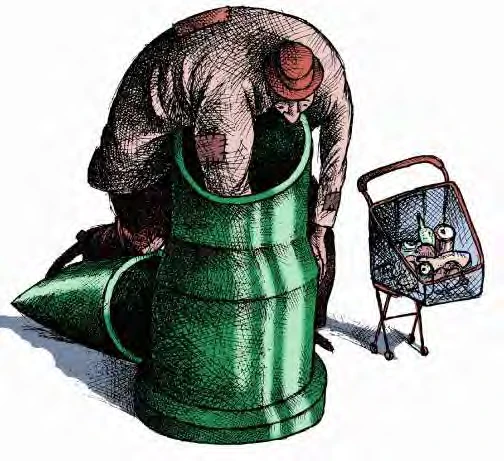
कार्टून का विवरण: कार्टून में दिखाया गया है कि एक व्यक्ति अपने ही घर की दीवारों (देश की सीमाओं) के भीतर बारूद लगाकर उसे नष्ट करने का प्रयास कर रहा है।
कार्टून का संदेश: "जो अपने ही देश के खिलाफ लड़ते हैं, निश्चित ही वे किन्हीं बातों से नाखुश होते हैं। शायद यह उनकी अपनी असुरक्षा ही है, जो पूरे देश के लिए सुरक्षा का संकट पैदा करती है।" यह कार्टून दर्शाता है कि आंतरिक अलगाववाद और गृहयुद्ध देश की अखंडता के लिए बाहरी हमलों से भी अधिक खतरनाक होते हैं।
2. नव-स्वतंत्र देशों की आंतरिक असुरक्षा के कारण
विकासशील देशों में आंतरिक सुरक्षा के खतरे पैदा होने के मुख्य कारण निम्नलिखित थे:
- राष्ट्र-निर्माण की अधूरी प्रक्रिया: औपनिवेशिक शासन (Colonial Rule) से स्वतंत्रता के बाद, इन देशों में राष्ट्रीय एकता की भावना कमजोर थी।
- सीमाओं का कृत्रिम निर्धारण: साम्राज्यवादियों ने बिना किसी वैज्ञानिक और सामाजिक आधार के सीमाएं खींच दी थीं, जिससे कबीलाई और जातीय समूह विभाजित हो गए।
- शीतयुद्ध की राजनीति: महाशक्तियों ने तीसरी दुनिया के देशों के आंतरिक गृहयुद्धों में हस्तक्षेप किया और वहां के विद्रोही समूहों को हथियार व पैसा देकर आंतरिक संघर्ष को भड़काया।

अध्याय 5: समकालीन विश्व में सुरक्षा - भाग 4 (सुरक्षा के पारंपरिक तरीके: निशस्त्रीकरण और अस्त्र-नियंत्रण)
पारंपरिक सुरक्षा की अवधारणा में यह माना जाता है कि युद्धों को पूरी तरह से समाप्त तो नहीं किया जा सकता, परंतु अंतर्राष्ट्रीय नियमों और आपसी सहयोग के माध्यम से युद्धों की विभीषिका तथा हथियारों की होड़ को सीमित और नियंत्रित अवश्य किया जा सकता है। इसके लिए मुख्यतः तीन उपाय अपनाए जाते हैं:
1. निशस्त्रीकरण (Disarmament)
निशस्त्रीकरण का अर्थ है—कुछ विशेष प्रकार के अत्यंत विनाशकारी हथियारों पर पूरी तरह से रोक लगाना और उन्हें नष्ट कर देना।
- जैविक हथियार संधि (Biological Weapons Convention - BWC 1972): इसके द्वारा जैविक (बैक्टीरियोलॉजिकल) हथियारों के निर्माण, विकास और भंडारण पर पूरी तरह से प्रतिबंध लगा दिया गया। इस संधि पर 150 से अधिक देशों ने हस्ताक्षर किए।
- रासायनिक हथियार संधि (Chemical Weapons Convention - CWC 1993): रासायनिक हथियारों के उत्पादन और उनके उपयोग पर पूर्ण प्रतिबंध लगाने की वैश्विक संधि।
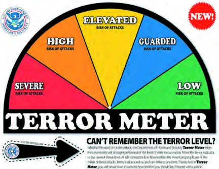
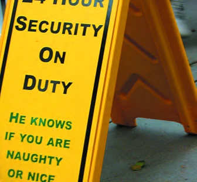
कार्टून का विवरण: कार्टून में दिखाया गया है कि पहले तो देश बड़ी संख्या में घातक हथियार बनाते हैं, फिर उन हथियारों से बचने के लिए बड़ी जटिल संधियां करने का दिखावा करते हैं। साथ में 'गृह युद्ध' की आशंका का एक काला साया दिखाया गया है।
कार्टून का संदेश: "वाह रे! पहले तो इन लोगों ने ये मारक और महंगे हथियार बनाए, फिर इन हथियारों से खुद को बचाने के लिए ये जटिल संधियां कीं। इसे कहते हैं सुरक्षा!" यह कार्टून अंतर्राष्ट्रीय सुरक्षा नीतियों के खोखलेपन पर करारा प्रहार करता है।
2. अस्त्र-नियंत्रण (Arms Control)
अस्त्र-नियंत्रण का अर्थ यह नहीं है कि हथियारों को पूरी तरह से समाप्त कर दिया जाए, बल्कि इसका अर्थ है हथियारों के निर्माण, परीक्षण और विकास को कुछ कानूनों और सीमाओं के दायरे में रखना।
- परमाणु अप्रसार संधि (Nuclear Non-Proliferation Treaty - NPT 1968): इस संधि के तहत केवल उन पांच देशों (अमेरिका, सोवियत संघ, ब्रिटेन, फ्रांस, चीन) को परमाणु हथियार रखने की अनुमति दी गई जिन्होंने 1967 से पहले इनका परीक्षण कर लिया था, और बाकी देशों पर प्रतिबंध लगा दिया गया। भारत ने इसे भेदभावपूर्ण मानकर इस पर हस्ताक्षर नहीं किए।
- एन्टी-बैलिस्टिक मिसाइल संधि (ABM Treaty 1972): अमेरिका और सोवियत संघ के बीच हुई संधि, जिसने रक्षात्मक बैलिस्टिक मिसाइल प्रणालियों के निर्माण को सीमित किया।
- SALT और START संधियां: दोनों महाशक्तियों के बीच रणनीतिक परमाणु हथियारों के नियंत्रण और कटौती के लिए क्रमशः 'सामरिक अस्त्र परिसीमन वार्ता' (SALT) और 'सामरिक अस्त्र न्यूनीकरण संधि' (START) की गई।
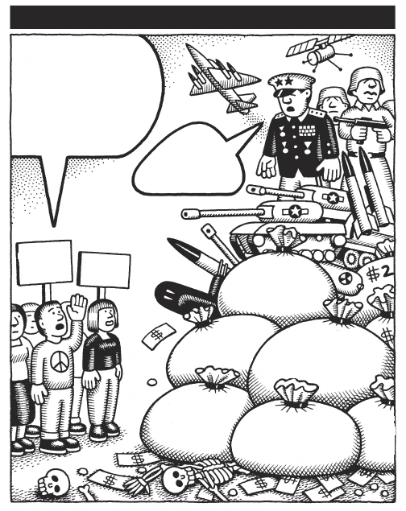
कार्टून का विवरण: कार्टूनिस्ट एंडी सिंगर द्वारा बनाए गए इस कार्टून में दिखाया गया है कि सैन्य रक्षा पर अरबों डॉलर (जैसे इराक युद्ध पर 300 अरब, सैन्य विभाग पर 425 अरब) खर्च किए जाते हैं, जबकि शांति और अहिंसा जैसी पहलों को नगण्य बजट दिया जाता है। नागरिक कह रहे हैं: "अहिंसा विभाग की स्थापना करो!"
कार्टून का संदेश: यह कार्टून सरकारों की प्राथमिकताओं पर सवाल उठाता है कि वे युद्ध की तैयारी और रक्षा खर्चों में तो पानी की तरह पैसा बहाती हैं, लेकिन शांति स्थापित करने वाले सामाजिक कार्यों में कंजूसी करती हैं।
3. विश्वास बहाली के उपाय (Confidence Building Measures - CBMs)
यह एक ऐसी प्रक्रिया है जिसमें विरोधी देश युद्ध की आशंका को कम करने के लिए आपस में सूचनाओं का आदान-प्रदान करते हैं।
- देश एक-दूसरे को अपने सैन्य ठिकानों, सैन्य गतिविधियों और सैन्य युद्धाभ्यासों के बारे में पहले से सूचित करते हैं।
- दोनों देश एक-दूसरे को आश्वस्त करते हैं कि वे अचानक या बिना चेतावनी के हमला नहीं करेंगे।
- इससे दोनों देशों के बीच गलतफहमी और अविश्वास का वातावरण दूर होता है।
अध्याय 5: समकालीन विश्व में सुरक्षा - भाग 5 (अपारंपरिक सुरक्षा: मानव सुरक्षा और मानवाधिकार)
सुरक्षा की अपारंपरिक धारणा केवल राज्यों या सरकारों की सीमाओं की रक्षा से ऊपर उठकर व्यक्तियों और मानव समाजों की सुरक्षा (Human Security) पर बल देती है। इसे ही 'मानव सुरक्षा' कहा जाता है। इसका तर्क है कि यदि कोई देश सुरक्षित है लेकिन उसके नागरिक भूख, गरीबी, बीमारी और हिंसा का शिकार हैं, तो उस सुरक्षा का कोई मूल्य नहीं है।
1. मानव सुरक्षा (Human Security) का अर्थ
मानव सुरक्षा की परिभाषा बहुत व्यापक है। इसे मुख्य रूप से दो दृष्टिकोणों से समझा जाता है:
- संकीर्ण अर्थ - भय से मुक्ति (Freedom from Fear): इसका मुख्य जोर व्यक्तियों को युद्ध, गृहयुद्ध, हिंसा, दंगे और शारीरिक नुकसान से बचाना है।
- व्यापक अर्थ - अभाव से मुक्ति (Freedom from Want): इसका मानना है कि भूख, गरीबी, सामाजिक आर्थिक असमानता और गंभीर महामारियां भी मानव जीवन के लिए बड़ा खतरा हैं। सुरक्षा का मतलब केवल बंदूक की गोली से बचना नहीं, बल्कि भूख और अभाव से बचना भी है।
कार्टून का विवरण: कार्टून में एक आम आदमी फटेहाल स्थिति में बैठा है, और वह सुरक्षा के भारी सैन्य दावों को सुनकर मुस्कुरा रहा है।
कार्टून का संदेश: "अब लग रहा है कि बात हो रही है! इसे ही मैं सचमुच के आदमी के लिए सचमुच की सुरक्षा कहता हूँ।" यह दर्शाता है कि एक आम नागरिक के लिए सुरक्षा का अर्थ है—रोटी, कपड़ा, मकान, शिक्षा, स्वास्थ्य और शांतिपूर्ण जीवन, न कि केवल सीमा पर लड़ाकू विमानों की गर्जना।
2. मानवाधिकार और सुरक्षा (Human Rights and Security)
मानवाधिकारों की सुरक्षा करना मानव सुरक्षा का ही एक भाग है। दुनिया में मानवाधिकारों को मुख्य रूप से तीन श्रेणियों में विभाजित किया गया है:
- राजनैतिक अधिकार (Political Rights): जैसे अभिव्यक्ति की स्वतंत्रता (Freedom of Speech), शांतिपूर्ण सभा करने और संगठन बनाने का अधिकार।
- आर्थिक और सामाजिक अधिकार (Economic & Social Rights): जैसे काम करने का अधिकार, भूख से मुक्ति, सम्मानजनक जीवन यापन और सामाजिक सुरक्षा का अधिकार।
- अल्पसंख्यकों और मूलवासियों के अधिकार (Minority & Indigenous Rights): किसी देश के भीतर जातीय, धार्मिक या भाषाई अल्पसंख्यकों और मूल निवासियों की संस्कृति व पहचान की रक्षा का अधिकार।
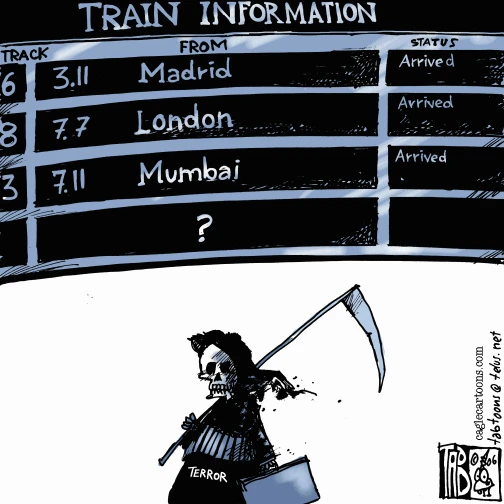
कार्टून का विवरण: कार्टून में एक व्यक्ति अमेरिका के मानवाधिकार रिपोर्ट कार्ड को हाथ में लिए खड़ा है, जिसमें बाहर तो बड़ी बातें लिखी हैं, लेकिन अंदर मानवाधिकारों के उल्लंघन की कई शिकायतें दबी पड़ी हैं।
कार्टून का संदेश: "मानवाधिकारों के उल्लंघन की बात हो तो हम हमेशा बाहर क्यों देखते हैं? क्या हमारे अपने देश में इसके उदाहरण नहीं मिलते?" यह कार्टून सरकारों के उस दोहरे मापदंड को उजागर करता है जहाँ वे बाहरी दुनिया में तो मानवाधिकारों की बड़ी वकालत करती हैं, लेकिन अपने ही देश के नागरिकों के अधिकारों का हनन करती हैं।
अध्याय 5: समकालीन विश्व में सुरक्षा - भाग 6 (खतरे के नए स्रोत: वैश्विक निर्धनता और पलायन)
समकालीन विश्व राजनीति में सुरक्षा के समक्ष खड़े पारंपरिक सैन्य खतरों के अतिरिक्त कुछ ऐसे नए खतरे सामने आए हैं जो पूरी मानवता के लिए खतरा हैं। इनमें सबसे प्रमुख है—वैश्विक निर्धनता (Global Poverty) और इसके परिणामस्वरूप होने वाला जन-पलायन व शरणार्थी संकट।
1. वैश्विक निर्धनता (Global Poverty)
दुनिया में अमीर और गरीब देशों के बीच की आर्थिक खाई लगातार चौड़ी हो रही है:
- उत्तरी गोलार्द्ध (Northern Hemisphere): यहाँ के अमीर देशों की जनसंख्या वृद्धि दर अत्यंत कम है परंतु आय और संसाधन बहुत अधिक हैं।
- दक्षिणी गोलार्द्ध (Southern Hemisphere): यहाँ के गरीब देशों में जनसंख्या बहुत तेजी से बढ़ रही है, लेकिन आय और संसाधन बेहद कम हैं। इससे वहां भुखमरी, बेरोजगारी और संसाधन संकट गहरा रहा है।
2. नवजात शिशु मृत्यु दर और जीवन प्रत्याशा (NCERT सांख्यिकी)
अमीर और गरीब देशों के बीच स्वास्थ्य व जीवन स्तर में कितना अंतर है, इसे निम्नलिखित तालिका से स्पष्ट रूप से समझा जा सकता है:
| क्षेत्र / देश | औसत जीवन प्रत्याशा (Life Expectancy) | शिशु मृत्यु दर (Infant Mortality) |
|---|---|---|
| विकसित देश (Sweden) | 70 वर्ष से अधिक (उच्च आय) | 1000 नवजातों में केवल 3 मौतें |
| विकासशील देश (औसत) | कम/मध्यम आय | 100 शिशुओं में 1 मौत |
| भारतीय उपमहाद्वीप | मध्यम जीवन प्रत्याशा | प्रत्येक 7 शिशुओं में से 1 की मौत |
| सहारा मरुस्थल के दक्षिणी अफ्रीकी देश | केवल 40 वर्ष (अत्यंत कम) | प्रत्येक 5 शिशुओं में से 1 की मौत |
मानचित्र का विवरण: यह मानचित्र अफ्रीका महाद्वीप में जारी विभिन्न सशस्त्र जातीय संघर्षों, भुखमरी और शरणार्थी संकटों के क्षेत्रों को दर्शाता है।
मानचित्र का संदेश: यह प्रदर्शित करता है कि गरीबी, बीमारी और आंतरिक युद्ध एक-दूसरे से जुड़े हुए हैं। अफ्रीका के अशांत क्षेत्रों से लाखों की संख्या में शरणार्थी अपनी जान बचाने के लिए पड़ोसी देशों और उत्तरी गोलार्द्ध की ओर पलायन कर रहे हैं।
3. पलायन: शरणार्थी बनाम आंतरिक विस्थापित जन
वैश्विक निर्धनता और गृहयुद्धों के कारण होने वाले पलायन में दो तरह के लोग शामिल होते हैं:
अध्याय 5: समकालीन विश्व में सुरक्षा - भाग 7 (खतरे के नए स्रोत: आतंकवाद, महामारियाँ और वैश्विक तापवृद्धि)
गैर-पारंपरिक सुरक्षा के क्षेत्र में खतरे के कुछ अन्य अत्यंत विनाशकारी स्रोत उभरे हैं जो संपूर्ण मानव जाति के अस्तित्व पर प्रश्नचिह्न लगा रहे हैं। इनसे निपटने के लिए किसी देश की सैन्य शक्ति पर्याप्त नहीं है, बल्कि वैश्विक स्तर पर सहयोग की आवश्यकता है।
1. आतंकवाद (Terrorism)
आतंकवाद का आशय राजनीतिक हिंसा (Political Violence) से है, जो जानबूझकर और बिना किसी भेदभाव के आम नागरिकों (Civilians) को निशाना बनाती है।
- इसका मुख्य उद्देश्य समाज में भय का माहौल पैदा करना और सरकारों को अपनी मांगें मानने के लिए मजबूर करना है।
- विमान अपहरण, बम विस्फोट, सार्वजनिक स्थानों पर गोलाबारी इसके मुख्य तरीके हैं।
- ऐतिहासिक घटना: 11 सितंबर 2001 को अमेरिका के वर्ल्ड ट्रेड सेंटर पर हुआ आतंकी हमला (9/11 की घटना), जिसके बाद आतंकवाद को वैश्विक सुरक्षा का सबसे बड़ा खतरा स्वीकार किया गया।
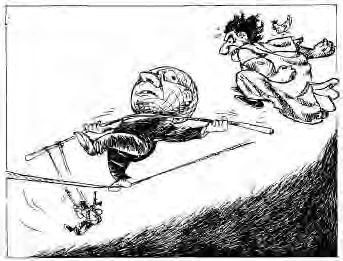
कार्टून का विवरण: कार्टूनिस्ट केशव (द हिंदू) द्वारा बनाए गए इस कार्टून में तीन भयानक दैत्य 'प्राकृतिक आपदाएं', 'आतंकवाद' और 'महामारी' के रूप में मानवता पर हमला करते हुए दिखाए गए हैं।
कार्टून का संदेश: "इन मुद्दों से दुनिया कैसे उबरे?" यह कार्टून स्पष्ट संदेश देता है कि आज दुनिया के सामने सबसे बड़ी सुरक्षा चुनौतियाँ सैन्य युद्ध नहीं, बल्कि आतंकवाद, वैश्विक महामारियां और विनाशकारी पर्यावरणीय आपदाएं हैं।
2. वैश्विक महामारियां (Global Epidemics)
आज की वैश्विक दुनिया में व्यापार, पर्यटन, और प्रवास के माध्यम से बीमारियां अत्यंत तीव्र गति से एक देश से दूसरे देश में फैलती हैं:
- HIV-AIDS, बर्ड फ्लू और सार्स (SARS): इन महामारियों ने दुनिया भर में लाखों लोगों की जान ली है। बर्ड फ्लू के कारण कई देशों को पोल्ट्री निर्यात बंद करना पड़ा।
- कोविड-19 (Covid-19) और इबोला: हाल के वर्षों में इन महामारियों ने सिद्ध कर दिया कि किसी एक देश की बीमारी पूरे विश्व की अर्थव्यवस्था और जनजीवन को असुरक्षित बना सकती है।
- यदि इन महामारियों को रोकने के उपाय न किए जाएं, तो यह राष्ट्रों की उत्पादक क्षमता और सैन्य क्षमता को भी गंभीर नुकसान पहुंचा सकती हैं।
3. वैश्विक तापवृद्धि (Global Warming)
मानवीय गतिविधियों के कारण पृथ्वी के औसत तापमान में लगातार वृद्धि हो रही है, जिससे पर्यावरण का संतुलन बिगड़ रहा है:
- ग्लेशियरों के पिघलने से समुद्र का जलस्तर बढ़ रहा है, जिससे मालदीव और बांग्लादेश जैसे निचले तटीय क्षेत्रों के जलमग्न होने का खतरा है।
- इसके परिणामस्वरूप करोड़ों लोग 'पर्यावरणीय शरणार्थी' (Environmental Refugees) बनकर विस्थापित होंगे।
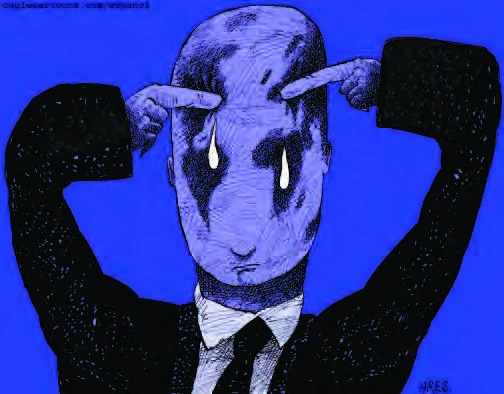
चार्ट का विवरण: UNHCR के आंकड़ों पर आधारित यह मानचित्र दिखाता है कि विश्व के विस्थापित लोगों को कहाँ शरण दी गई है—17% यूरोप में, 30% अफ्रीका में, 26% एशिया-पैसिफिक क्षेत्र में तथा शेष मिडिल ईस्ट और उत्तरी अफ्रीका में।
चार्ट का संदेश: यह दर्शाता है कि शरणार्थियों का भार मुख्य रूप से विकासशील और गरीब देशों पर ही सबसे अधिक है, जो उनकी अर्थव्यवस्थाओं पर अतिरिक्त बोझ डालता है।
अध्याय 5: समकालीन विश्व में सुरक्षा - भाग 8 (सहयोगात्मक सुरक्षा और भारत की सुरक्षा रणनीति)
सुरक्षा के गैर-पारंपरिक और वैश्विक खतरों (जैसे गरीबी, आतंकवाद, महामारी, ग्लोबल वॉर्मिंग) का स्वरूप ऐसा है कि कोई भी देश इनका सामना अकेले नहीं कर सकता। इनसे निपटने के लिए अंतर्राष्ट्रीय मंच पर आपसी सहयोग और साझा प्रयासों की आवश्यकता होती है जिसे सहयोगात्मक सुरक्षा (Cooperative Security) कहा जाता है।
1. सहयोगात्मक सुरक्षा (Cooperative Security)
सहयोगात्मक सुरक्षा में सैन्य बल के स्थान पर आपसी सहयोग, कूटनीति और अंतर्राष्ट्रीय संस्थाओं की भूमिका महत्वपूर्ण होती है।
- सहयोग के मंच: संयुक्त राष्ट्र संघ (UN), विश्व स्वास्थ्य संगठन (WHO), विश्व बैंक (World Bank), अंतर्राष्ट्रीय मुद्रा कोष (IMF) जैसी अंतर्राष्ट्रीय संस्थाएं।
- गैर-सरकारी संगठन (NGOs): रेडक्रॉस, एमनेस्टी इंटरनेशनल, ह्यूमन राइट्स वॉच जैसी संस्थाएं।
- वैश्विक व्यक्तित्व: नेल्सन मंडेला, मदर टेरेसा जैसी हस्तियां जो विश्व शांति के लिए काम करती हैं।
- सैन्य बल का प्रयोग अंतिम विकल्प के रूप में ही किया जाना चाहिए, वह भी केवल अंतर्राष्ट्रीय बिरादरी की सहमति (जैसे UN सुरक्षा परिषद की मंजूरी) से।

2. भारत की सुरक्षा रणनीति (India's Security Strategy)
स्वतंत्रता के बाद से ही भारत को बाहरी (पड़ोसी देशों से) और आंतरिक (अलगाववादी आंदोलनों) दोनों तरह की सुरक्षा चुनौतियों का सामना करना पड़ा है। भारत की सुरक्षा रणनीति के मुख्य रूप से चार स्तंभ (Four Pillars) हैं:
- सैन्य क्षमता को मजबूत करना: भारत ने अपनी सैन्य क्षमता को बढ़ाने के लिए शक्तिशाली सेना का गठन किया और 1974 व 1998 में परमाणु परीक्षण (Nuclear Tests) किए ताकि कोई भी पड़ोसी देश भारत पर हमला करने का दुस्साहस न करे।
- अंतर्राष्ट्रीय संस्थाओं और नियमों को मजबूत करना: भारत ने हमेशा गुटनिरपेक्षता (Non-Alignment) की नीति अपनाई, संयुक्त राष्ट्र (UN) के चार्टर का समर्थन किया और विश्व में परमाणु निशस्त्रीकरण (Nuclear Disarmament) की वकालत की। भारत यूएन शांति सेना में सबसे अधिक सैनिक भेजने वाले देशों में से एक है।
- आंतरिक सुरक्षा चुनौतियों से निपटना: भारत ने नागालैंड, मिजोरम, पंजाब और कश्मीर जैसे अशांत क्षेत्रों में अलगाववादी आंदोलनों का सामना करने के लिए लोकतांत्रिक और संवैधानिक तरीके अपनाए तथा राष्ट्रीय एकता को अक्षुण्ण बनाए रखा।
- आर्थिक विकास और गरीबी उन्मूलन: भारत की सुरक्षा का एक बड़ा आयाम आंतरिक गरीबी, भुखमरी और अभाव को दूर करना है ताकि नागरिकों के बीच आर्थिक असमानता कम हो और लोकतंत्र सुदृढ़ हो सके।
🧩 एनसीईआरटी गतिविधि: नदी जल विवाद खेल (Kotabagh River Simulation)
सिमुलेशन का विवरण: नदी के किनारे बसे चार काल्पनिक गाँव—कोटाबाग (Kotabagh), गेवली (Gewali), कंडली (Kandli) और गोइप्पा (Goippa) हैं।
- कोटाबाग: नदी के उद्गम पर सबसे पहले बसा है। इसके पास प्रचुर प्राकृतिक संसाधन हैं और यह नदी के बहाव को नियंत्रित कर सकता है।
- गेवली: नदी के बहाव में नीचे है, इसके पास मध्यम संसाधन हैं लेकिन यह कोटाबाग के बांध निर्माण से असुरक्षित महसूस करता है।
- कंडली और गोइप्पा: सबसे नीचे बसे हैं, जो पानी के प्रदूषण और कमी से सबसे अधिक प्रभावित हैं।
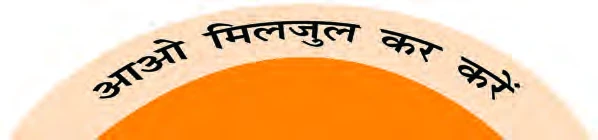
सीख (Conclusion of Exercise): यह खेल वास्तव में संप्रभु देशों (Sovereign States) के बीच प्राकृतिक संसाधनों (जैसे नदी जल) के बंटवारे को लेकर होने वाले संघर्षों और उनके कारण उत्पन्न होने वाली राष्ट्रीय असुरक्षा को जीवंत रूप से समझाने के लिए एक उत्कृष्ट उदाहरण है।
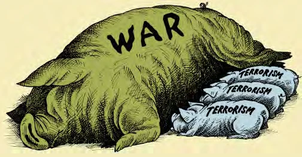
कार्टून का विवरण: कार्टून में युद्ध के देवता (Ares) को एक सैनिक के रूप में दिखाया गया है, जिसकी पीठ पर एक डरावना साया (आतंकवाद) हाथ में बम लिए खड़ा है।
कार्टून का संदेश: सैन्य युद्ध और हिंसा अक्सर आतंकवाद को जन्म देते हैं और उसे बढ़ावा देते हैं। सैन्य आक्रामकता कभी आतंकवाद का स्थाई समाधान नहीं हो सकती, बल्कि यह असुरक्षा का एक अंतहीन चक्रव्यूह तैयार करती है।
अध्याय 5: मेगा प्रश्न बैंक (50+ Q&A)
महत्वपूर्ण बहुविकल्पीय प्रश्न (MCQs)
Q1. सुरक्षा की परंपरागत धारणा का मुख्य केंद्र क्या है?
उत्तर: सैन्य खतरा (Military Threat)।
Q2. परमाणु अप्रसार संधि (NPT) किस वर्ष हुई थी?
उत्तर: 1968 में।
Q3. 'अपरोध' (Deterrence) का क्या अर्थ है?
उत्तर: युद्ध को रोकने के लिए अपनी सैन्य शक्ति का प्रदर्शन करना।
Q4. 'हान नदी का चमत्कार' किस देश की सुरक्षा और आर्थिक प्रगति से जुड़ा है?
उत्तर: दक्षिण कोरिया।
Q5. वैश्विक तापवृद्धि (Global Warming) सुरक्षा की किस धारणा के अंतर्गत आती है?
उत्तर: अपारंपरागत या वैश्विक सुरक्षा।
लघु उत्तरीय प्रश्न (Short Answer Questions)
Q6. निशस्त्रीकरण (Disarmament) और अस्त्र नियंत्रण (Arms Control) में क्या अंतर है?
उत्तर: निशस्त्रीकरण का अर्थ है हथियारों को पूरी तरह नष्ट करना, जबकि अस्त्र नियंत्रण का अर्थ है हथियारों की संख्या और उनके प्रयोग के लिए नियम बनाना।
Q7. 'मानवीय सुरक्षा' (Human Security) के दो मुख्य घटक क्या हैं?
उत्तर: 1. अभाव से मुक्ति (Freedom from Want), 2. डर से मुक्ति (Freedom from Fear)।
Q8. 'विश्वास बहाली के उपाय' (Confidence Building Measures) क्या हैं?
उत्तर: देशों के बीच अविश्वास को कम करने के लिए अपनी सैन्य गतिविधियों की जानकारी साझा करना।
Q9. भारत की सुरक्षा रणनीति के किन्हीं दो घटकों के नाम लिखें।
उत्तर: 1. अपनी सैन्य क्षमता को मजबूत करना, 2. आंतरिक समस्याओं का लोकतांत्रिक तरीके से समाधान करना।
दीर्घ उत्तरीय प्रश्न (Long Answer Questions - 6 Marks)
Q10. परंपरागत और अपारंपरागत सुरक्षा में क्या अंतर है? उदाहरणों सहित विस्तार से समझाएं।
उत्तर:
1. **परंपरागत सुरक्षा:** यह सैन्य खतरों, राष्ट्र-राज्य की रक्षा और सीमाओं पर केंद्रित है। उदाहरण — युद्ध, शक्ति संतुलन।
2. **अपारंपरागत सुरक्षा:** यह पूरी मानवता की रक्षा, गरीबी, महामारी और मानवाधिकारों पर केंद्रित है। उदाहरण — ग्लोबल वार्मिंग, आतंकवाद, भुखमरी।
Q11. 21वीं सदी में सुरक्षा के नए खतरों (जैसे आतंकवाद और साइबर युद्ध) की चर्चा करें।
उत्तर:
1. **आतंकवाद:** निर्दोष लोगों को हिंसक तरीकों से डराना।
2. **साइबर युद्ध:** डिजिटल बुनियादी ढांचे को हैक करके देश को पंगु बनाना।
3. **पलायन:** बढ़ती शरणार्थी समस्या।
4. **महामारियां:** नई बीमारियों का तेज़ी से फैलना (जैसे कोविड-19)।
अगले भाग में हम **बोर्ड परीक्षा विशेष (Previous Year Questions)** और नक्शों (Maps) को देखेंगे।
अध्याय 5: बोर्ड परीक्षा विशेष (Board Exam Special)
1. मानचित्र कार्य (Map Work) - महत्वपूर्ण स्थान
इस अध्याय से जुड़े स्थान और देश जिन्हें मैप पर पहचानना ज़रूरी है:
- वह देश जो आतंकवाद के खिलाफ 'ग्लोबल वॉर ऑन टेरर' (Global War on Terror) का नेतृत्व कर रहा है: अमेरिका।
- विश्व का एकमात्र देश जिस पर परमाणु हमला हुआ: जापान।
- वह देश जहाँ 2001 में अल-कायदा ने 9/11 का हमला किया: अमेरिका (न्यूयॉर्क/वाशिंगटन)।
- भारत के दो परमाणु संपन्न पड़ोसी देश: पाकिस्तान और चीन।
- निशस्त्रीकरण की संधियों (जैसे START) में शामिल प्रमुख गुट: अमेरिका और रूस।
2. पिछले 10 वर्षों के बोर्ड प्रश्न (Previous Year Questions)
बोर्ड परीक्षा में बार-बार पूछे जाने वाले प्रश्न:
- Q1. परंपरागत और अपारंपरागत सुरक्षा धारणाओं के बीच कोई चार अंतर स्पष्ट करें। (4 अंक)
- Q2. भारत की सुरक्षा रणनीति के चार प्रमुख घटकों का विस्तार से वर्णन करें। (6 अंक)
- Q3. 'अस्त्र नियंत्रण' (Arms Control) की दिशा में की गई किन्हीं दो संधियों (जैसे NPT, SALT) के बारे में बताएं। (4 अंक)
- Q4. 'आतंकवाद' वैश्विक सुरक्षा के लिए किस प्रकार एक गंभीर चुनौती है? (6 अंक)
- Q5. 'अपरोध' (Deterrence) की नीति ने किस प्रकार बड़े युद्धों को रोकने में मदद की है? (2 अंक)
- Q6. वैश्वीकरण के दौर में सुरक्षा के नए खतरों (जैसे पलायन और साइबर युद्ध) की चर्चा करें। (4 अंक)
- Q7. भारत ने एन.पी.टी. (NPT) पर हस्ताक्षर क्यों नहीं किए? इसके पीछे के तर्क दें। (4 अंक)
- Q8. क्या जलवायु परिवर्तन (Climate Change) एक सुरक्षा संकट है? तर्क सहित उत्तर दें। (6 अंक)
3. मास्टर गुरुमन्त्र (Final Tips)
- सुरक्षा की परिभाषा: हमेशा परंपरागत और अपारंपरागत धारनाओं के अंतर को याद रखें।
- भारत: पोखरण परमाणु परीक्षण और भारत की गुटनिरपेक्ष नीति पर विशेष ध्यान दें।
- संधियां: NPT, BWC, और CWC के वर्षों को रट लें।
- आतंकवाद: 9/11 की घटना और उसके वैश्विक प्रभाव को अच्छी तरह समझ लें।
अध्याय 5 का मास्टर कोर्स संपन्न। अब आप बोर्ड परीक्षा के लिए पूरी तरह से तैयार हैं!